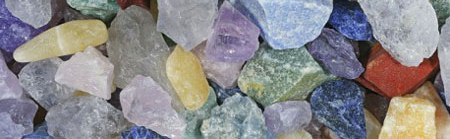

Когда, сжигая синеву,
Багряный день растет неистов,
Как часто сумрок я зову,
Холодный сумрак аметистов.
И чтоб не знойные лучи
Сжигали грани аметиста,
А лишь мерцание свечи
Лилось там жидко и огнисто.
И, лиловея и дробясь,
Чтоб уверяло там сиянье,
Что где-то есть не наша с в я з ь,
А лучезарное с л и я н ь е...Иннокентий Анненский